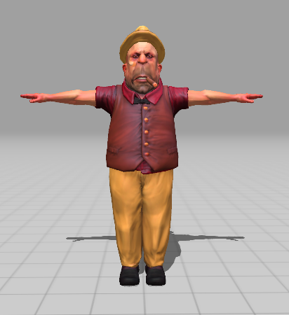
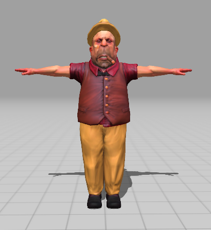

Group 4:
Nick, Neysha, Sandy
Game Title:
Escaping Waldo
Genre:
Survival Horror
Platform:
PC
Engine:
Unreal Engine 4
Theme:
Where's Waldo?
Game Inspiration:
Hello Neighbor
Premise:
You're trying to collect the hidden Waldo game pieces and make your way to the exit. The only issue is you're in an area full of Waldo look-alikes and the real Waldo is trying to kill you. Close encounters with Waldo require you to Sprint and hide in the environment to have Waldo lose your trail and get another opportunity to seek out the hidden game pieces. You can only make your way to the exit once you've collected all the Waldo game pieces.


Work Break down:
- Nick: environment, audio, Waldo character model
- Neysha: audio assets, item collection, random placement of items, Waldo's AI
- Sandy: UI, crowd assets and animation, crowd AI, website, some 3D assets
Week of October 29, 2018
- Fixed the problems in Waldo's animation
- Added music to the main menu
- Incorporated a block boundary to maintain the player within the environment of the game
- Added a slight fog and inputted the Exit sign to the game. Once the player collects all 5 items they will be able to leave the circus
- The following Door_BP goes over the interaction between the player and the door. The Door will cast to the third player and check if the slot items have reached the 5 total items for collection. Once this is done it will set the slot number to 5 which will then go into the time line. in the time line there is clean parabola that will perform movement of the door in a smooth transition in a period of 1 second
- The following is the smooth parabola demonstration as the object is activated to perform its motion
Week of October 29, 2018
- We rigged and animated the Waldo model but are having some issues with Waldo's animation
- We have constructed a blueprint for the Waldo AI that will chase down the player once it falls in its line of vision. At the moment the line of vision is set to 45degrees, which is very close to realistic vision of scope. It still requires some tweaking. You can see the problems with the animation and AI in the video below
- The blueprint for Waldo's chasing AI is also included
- We have also implemented the win and lose screens, the lose screen is currently connected and the win screen is ready to be connected. Below are screenshots of the screens and a video of the lose screen
Week of October 22, 2018
- We started working on the crowd roaming AI, we have a basic version that still needs improving. In the video below, you can see the current roaming AI. When a character collides with an object or another character, he stops and chooses a new destination instead of navigating around it
- We added a couple of characters to the world. This process has been challenging for more than one reason. It's hard to find enough characters that fit the theme, and sometimes I find a 3D mesh without the textures and it would take to long to make it ourselves. It also takes some time to get the characters rigged on Mixamo (and sometimes it doesn't work), pick different walking and ideling animations that look good, download them and upload them to unreal, and then create an animation blueprint. We are also still experimenting with changing textures on characters to make them look different. We just found out about Photoshop Fuse, currently free, which can be used to easily customize 3D characters so we'll experiment with it.
Week of October 15, 2018
- We had our first playable presentation this week
- Most of the UI is complete
- We have been learning how to mamanipulate textures for the people to create a diverse crowd using limited 3D characters, for example the second character below was created by changing the skin material and if we have different animations for the characters (different walk style, idle styles ...) we can have a better crowd
- We are learning how to work with animation in unreal
- We are also trying to rig 3D meshes we found using the skeleton from one of the Mixamo characters so we can use their animations
Week of October 8, 2018
- We are working on our powerpoint for the first-playable presentation
- We modified the game to be a True First Person Point of view
- We started working on the HUD
- Gave player ability to sprint away from danger by holding down the Left_Shift key. The following blueprint illustrates the Sprint action being called on once user presses the shift key. When pressed Player will accelerates a max speed of 1600 when released it will go back down to a more normal walk of 800. This will be will be helpful in running away from Waldo
- Updated HUD to display objects as they are collected. Set all the Items with a particular variable number under one particular slot. once player goes over an item the number will push to the slot the ID number of the item overwritten anything that might of been there before. Blueprint illustrates the set up of ID numbers per item. As seen if the slot varible is >= 0 it will override and "set" a int value (ex set slot1item = 3). Furthermore, creating the HUD widget interaction once player collects item is stored in the "ThirdPersonCharacter". By using the int variable "Slot1Item"in a "switch on variable" call we are able to change the opacity of each individual item widget once there ID number is collected from the ThirdPersonCharacter.
- Item Randomization: We were able to finally compile a working random assortment of the items through the environment. In the following blueprint you can see There is a "volume" object which represents a box to create the range of the environment in which random spawning may occur. We take the x and y variable of the "volume" component to make sure it is placed some where near the ground and set the z variable at default 0. Once a random x and y have been selected they are made into a vector which is given out to the spawning items individual at the beginning of the game.
Week of October 1, 2018
- We have removed the gun from the first person character
- We have Items Rotating with sounds once player picks up
- So far we have what we need for first-playable but we are hoping to get more work done in the next week
- We also received the waldo model this week

Week of September 24, 2018
- We have an artist working on the Waldo character model
- We had trouble putting the project on Git at the beggining of the week so on wednesday we met for a couple of hours and worked on that
- The project is now on Git and we are all able to make changes to it successfully
- We didn't get a lot of work done during the week because of the Git problems but we are going to catch up this weekend
- We collected some characters to use for the crowd but are still looking for more

 

Week of September 17, 2018
- Nick worked on the environment
- Neysha worked on the random item placement
- Sandy worked on collecting more 3D models and the UI
Week of September 10, 2018
- Nick worked on the environment
- Neysha worked on collision detection for the items
- Sandy worked on collecting more 3D models and the Main Menu screen


Week of September 3, 2018
- Practiced Presentation
- Sandy constructed central storage on google drive and collected multiple free environment models
- Neysha collected multiple free Audio models
- Nick began to toy constructing an environment


Week of August 29, 2018
- The team began to construct PowerPoint Presentation
- Sandy Began to create mockup title designs